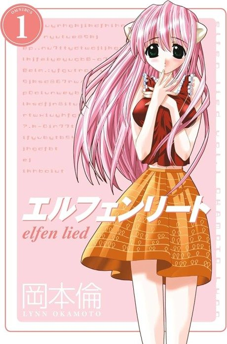
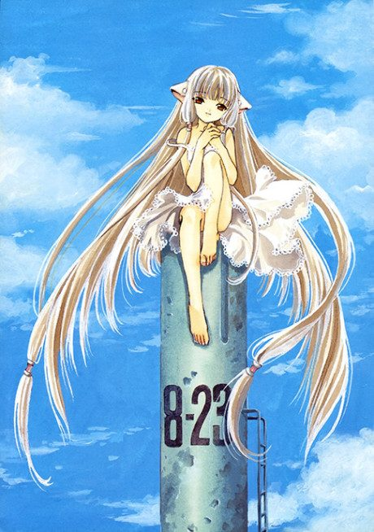

Elfen Lied
エルフェンリート
Lucy, a horned girl with deadly invisible powers, escapes from a lab and is found on a beach by two cousins, with no memory of who she is.
The anime ends the story its own way, apart from the manga.
6.8AniList score
—Animeter, no votes yet
13episodes
Rate it or report where you stopped
Anime finished. Where does the manga pick up?
StatusOwn ending
The anime follows the manga up to about chapter 60 (volume 6), then diverges and has an anime-original ending. The manga is finished and is best read from chapter 1, since the anime condenses a lot.
160113 end
Season 1
More like Elfen Lied
 Manga Ch. 888.4
Manga Ch. 888.4
 Original8.5
Original8.5
 Manga Ch. 707.6
Manga Ch. 707.6
 Own end7.2
Own end7.2
 Manga Ch. 587.4
Manga Ch. 587.4
 Manga Ch. 227.1
Manga Ch. 227.1
 Done7.4
Done7.4
 Manga Ch. 1178.2
Manga Ch. 1178.2
 Manga Ch. 1018.7
Manga Ch. 1018.7
 Manga Ch. 1818.4
Manga Ch. 1818.4
 Done8.4
Done8.4

Done7.1